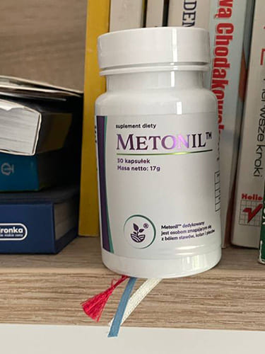
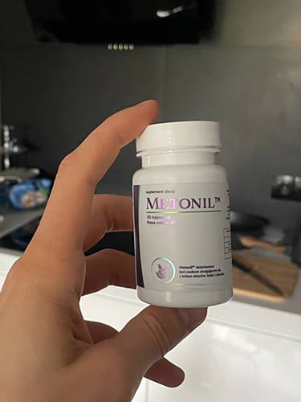
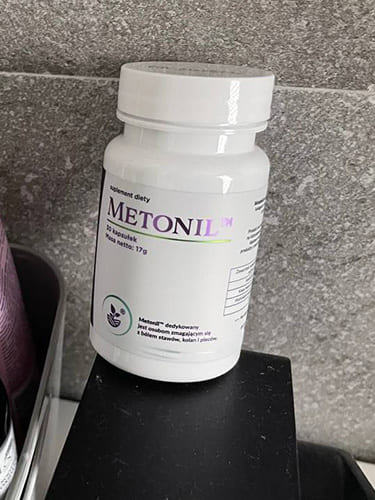

Omówienie najbardziej skandalicznych wiadomości tego tygodnia w studiu Polska9: "Emeryci to starzy ludzie, niech umrą, nikt ich nie żałuje. Jeśli nie artroza lub artretyzm, to coś innego ich zabije. Nie ma sensu wydawanie pieniędzy na starych ludzi!"
Kilka dni temu w sieciach społecznościowych szeroko rozpowszechniono zrzut ekranu skandalicznego przesłania Michaliny Boksewicz, zastępczyni wysokiego urzędnika ds. leczenia w Polsce. Po ogłoszeniu usunęła swoje konto na Facebooku. Ale mamy zrzuty ekranu z materiałami, które demonstrujemy.
Na szczęście nie cały rząd podziela punkt widzenia tego urzędnika.
Wczoraj okazało się, że Michalina Boksewicz i całe kierownictwo działu zostało zwolnione i przeprowadzono weryfikację. Aby zrozumieć istotę tego, co się dzieje, zaprosiłem do studia dwóch wysokich specjalistów ds. chorób stawów.
Jak taka osoba może pracować w strukturach rządowych? Na czyje konto kupiła luksusową posiadłość i regularnie latała na odpoczynek w drogich kurortach? Dlaczego tacy ludzie decydują o losie unikalnego polskiego środka stworzonego przez rodzimych ekspertów w Krakowie, który regeneruje stawy i pozbywa się artretyzmu, zapobiegając całkowitej niesprawności? I który musi być dostępny dla wszystkich obywateli Polski, nie tylko dla bogatych. Dlaczego nie przepuszczono do ogólnego obiegu tak wspaniałego środka? Porozmawiajmy tym.
Bożydar Kępa: "Pierwsze pytanie dotyczy Pawła Kreta - specjalisty ds. chorób stawów. Pawle, jak taki człowiek dostał się na tak wysoką pozycję?"
Paweł Kret: Aby zrozumieć całą sytuację, trzy dni temu zwolniono całe stare kierownictwo, łącznie z kobietą, o której mowa. Tak więc w tej chwili nie jest już w służbie publicznej i nie ma nic wspólnego z polską medycyną. Powodem masowego zwolnienia, jak wiecie, było mataczenie. Bardzo zawiła sprawa, zabraknie czasu, żeby ją szczegółowo wyjaśnić. Moim zadaniem jest przejrzenie wszystkich dokumentów. Już teraz mogę powiedzieć, że cała grupa starych rozwiązań wymaga rewizji.
Bożydar Kępa: "Masz na myśli, że zwolnili nie tylko ją, ale także całe kierownictwo? Jakie dokumęty masz na myśli? Czy możesz podać przykład?"
Paweł Kret: Tak, całe stare kierownictwo departamentu zostało całkowicie zwolnione. Na przykład można zadać pytanie, które pojawia się w przedstawionym przez Ciebie zrzucie ekranu. Omawiają inicjatywę władz, aby rozprowadzić wśród emerytów nowy, wyprodukowany na Łotwie środek do leczenia chorób stawów. Zgodnie z tą inicjatywą zaplanowano specjalny program krajowy, w którym ludzie mogli uzyskać środek po minimalnej cenie.
Ale stary zarząd podjął odwrotną decyzję. Blokowali ideę suplementu dostępnego dla własnych obywateli i woleli sprzedawać je za granicą, m.in. na Łotwie, gdzie jest ono produkowane. Udało im się również podpisać umowę z Francją na dostawę produktu. W cenie 1000 euro za opakowanie. I to pomimo tego, że nie mieli nawet takiego prawa, bo prawa do środka mają uczeni w Krakowie.
Bożydar Kępa: „Co za wysoka cena. 1000 euro za opakowanie. Dlaczego jest tak drogo? A kto pomyślał o sprzedaży za minimalną cenę, budżet po prostu nie pokryje takich wydatków?”
Paweł Kret: 1000 euro, to koszt, jaki przedstawili Francuzom i rzeczywiście za granicą są gotowi go kupić za prawie każde pieniądze.
Powód jest prosty - to jedyny produkt na całym świecie, który może całkowicie przywrócić układ mięśniowo-szkieletowy człowieka, przywracając go do zdrowego stanu. Zapewne wiesz, że choroby stawów są przyczyną dwóch trzecich niepełnosprawności i wielu zgonów na świecie. Suplement pomaga ludziom całkowicie się ich pozbyć. Bez operacji i bez ryzyka śmierci na stole operacyjnym. Stawy już nie bolą, więzadła wracają do normy, co oznacza, że dana osoba BĘDZIE ŻYŁA DUŻO DŁUŻEJ.
Bożydar Kępa: „Pytanie do Leona Danilczuka – co kryje się w tym środku, że za granicą są gotowi kupić go w takiej cenie? 1000 euro za opakowanie. Niesamowicie drogo”.
Leon Danilczuk: To suplement, nad którym pracował zespół naszych najlepszych polskich ekspertów w Krakowie, tworząc go od ponad dziesięciu lat. Rezultatem jest unikalny środek, który może całkowicie przywrócić do sprawności układ mięśniowo-szkieletowy. W rzeczywistości przywraca go do pierwotnego stanu. Nawet jeśli dana osoba ma poważne choroby stawów. Zapalenie stawów, choroba zwyrodnieniowa stawów, dna moczanowa i borelioza są odpowiedzialne za dwie trzecie niesprawności na świecie, w tym ofiar śmiertelnych. Produkt pozwala zapobiegać wszelkim chorobom stawów oraz zapobiegać niepełnosprawności, a nawet śmierci. Stąd bierze się niezwykle wysoki popyt.
Bożydar Kępa: "Co dokładnie robi ten produkt?"
Leon Danilczuk: To złożony suplement w formie kapsułek. Jego aktywne składniki szybko się wchłaniają i świetnie wpływają na cały układ mięśniowo-szkieletowy. Wystarczy stosować raz dziennie, aby zauważyć poprawę nawet już po 7-10 dniach.
Łagodzi stany zapalne i bóle stawów. ZA TĄ MIESZANKĘ SUBSTANCJI W 2012 ROKU POLSCY NAUKOWCY OTRZYMALI NAGRODĘ NOBLA. Ból, obrzęk, zaczerwienienie, stany zapalne to już przeszłość. Bardzo ważne jest odtworzenie tkanki chrzęstnej, co zmniejsza do zera ryzyko nowych przypadków choroby.
Uszkodzone obszary są odbudowywane, ścięgna, chrząstka i tkanka kostna wracają do normy — ludzie zwykle cierpią z powodu problemów ze stawami.
Produkt stabilizuje i wzmacnia wewnętrzną strukturę stawów. Nie ma ryzyka zapalenia tkanki chrzęstnej i uszkodzenia stawów. Ogólnie stawy stają się całkowicie zdrowe i ruchliwe, jak w młodości.
PRODUKT ZAWIERA MAKRO I MIKRO ELEMENTY PRZYDATNE DO ODBUDOWY STAWÓW I MIĘŚNI.
Rezultatem jest całkowita odbudowa układu mięśniowo-szkieletowego. Całe ciało wraca do absolutnie zdrowego stanu. Badania kliniczne, przeprowadzone w kilku etapach, wykazały, że produkt pomaga ludziom nawet w ekstremalnie ciężkich warunkach. Jeśli masz artrozę, zapalenie stawów, dnę moczanową w tym samym czasie, pigułka nadal pomoże. Ważnym punktem jest całkowite przywrócenie zaburzonego metabolizmu, który jest główną przyczyną wszystkich chorób stawów i mięśni.
Bożydar Kępa: "Czy mogę ci tu przerwać? Zaburzony metabolizm to dolegliwość większości ludzi. A ty mówisz, że to jest przyczyną chorób stawów. Czy możesz wyjaśnić?"
Leon Danilczuk: Dlatego w naszym kraju prawie 70% niepełnosprawności jest spowodowanych chorobami stawów i mięśni. Bo wszyscy uważają, że uszkodzony metabolizm jest normalny.
Jednocześnie z powodu zaburzeń metabolicznych zaczynają się rozwijać wszystkie choroby układu mięśniowo-szkieletowego. A wszystkie choroby, urazy, amputacje, zgony są oparte na metabolizmie.
Bożydar Kępa: "Dlaczego to jest takie niebezpieczne?"
Leon Danilczuk: Przy minimalnym zaburzeniu metabolizmu w pierwszej kolejności cierpi na tym odżywienie stawów. Organizm musi wspierać najważniejsze narządy, a stawy nie dostają wtedy „materiału budulcowego”.
Z powodu niewystarczającego odżywiania błona maziowa zaczyna się pogarszać. W miejscu urazu zaczynają tworzyć się stany zapalne i obrzęki.
w pierwszej kolejności - prowadzi to do zniszczenia tkanki chrzęstnej. Następnie - zwiększa się obciążenie uszkodzonych obszarów. To z kolei prowadzi do dalszego zniszczenia i zapalenia stawów.
Wszystko to zwiększa obciążenie szkieletu, który zużywa się kilka razy szybciej niż powinien. Pojawiają się różne problemy zdrowotne, pojawia się ból podczas ruchu i sztywność. Zaburzony metabolizm zwiększa ryzyko chorób przewlekłych. Osoba natychmiast rozwija cały zestaw chorób stawów, które początkowo są związane z zaburzeniami metabolicznymi. Osoba może stać się niepełnosprawna lub nawet umrzeć.
Bożydar Kępa: „Jak wysokie jest prawdopodobieństwo całkowitej niepełnosprawności? Jeśli, na przykład, zacząłem cierpieć na problemy metaboliczne, to ile czasu upłynie od zachorowania do wózka inwalidzkiego?”
Leon Danilczuk: Jeśli weźmiemy pod uwagę metody leczenia i pigułki, które większość uczonych przepisuje pacjentom, to prawdopodobieństwo inwalidztwa wynosi 99%. Niestety, obecnie w polskiej przestrzeni nie ma skutecznych remediów. A w UE w ogóle, dlatego obcokrajowcy są gotowi kupić ten środek.
Choroba zwyrodnieniowa stawów, zapalenie stawów, dna moczanowa, borelioza itp. - niektóre z tych chorób w ostateczności doprowadzą do kalectwa, amputacji lub śmierci. Czas od zachorowania do stanu krytycznego jest różny i zależy od indywidualnych czynników. W dużej mierze zależy to od stylu życia, przyjmowanych leków i genetyki.
Średnio mogę śmiało powiedzieć, że artroza, zapalenie stawów i inne choroby układu mięśniowo-szkieletowego skracają życie o 15-20 lat. Ktoś, na przykład, może żyć 80 lat, ale umrzeć w wieku 60 lat. I odwrotnie, jeśli stawy są leczone i wspierane, możesz żyć znacznie dłużej.
Bożydar Kępa: „Jak się ratować? Czy istnieją skuteczne metody leczenia? Czy możemy liczyć na miarodajną pomoc?”
Leon Danilczuk: To zależy od konkretnej sytuacji. Warto zrozumieć, że ludzie są omylni i często kieruje nimi chęć zysku. Są różne układy, układziki. Dlatego w kwestii zdrowia musimy pomyśleć dwa razy zanim coś zarzyjemy. Radzę po prostu nie ufać na ślepo.
Druga część problemu to skuteczność współczesnych pigułek. To krąg wielkiego biznesu zainteresowany maksymalnym zyskiem. Powtarzam, warto szukać rozwiązań które naprawdę mogą pomóc.
Zaraz potem naukowcy z Krakowa zwrócili się do organu naczelnego z prośbą o uruchomienie ogólnopolskiego programu, podczas którego każdy człowiek, będzie mógł kupić ten bardzo skuteczny środek na regenerację stawów i mięśni. Otrzymali jednak odmowę. Pracowałem przez dziesięć lat, aby pomóc obywatelom polski, a nie Francuzom czy Niemcom. Rozkładamy ręce z niemocy.
Bożydar Kępa: W studiu obecny jest czołowy analityk, Robert Mocaruk, który przedstawi też swoje zdanie na ten temat. Pytanie - Dlaczego państwo zrezygnowało z remedium ""?
Robert Mocaruk: Ponieważ nie czuło partnerstwa biznesowego, ale rodzaj socjalizmu. Sprzedajmy produkt z maksymalną marżą 10% i wszyscy będą zadowoleni. Chciano też stopniowo obniżać cenę zakupu, przyciągając fundusze medyczne. Każdy patrzy na prywatny interes. A jeśli oferta nie jest opłacalna komercyjnie, farmacja ma pełne prawo ją odrzucić. Dlatego producenci w Polsce odmówili produkcji w kraju. Tylko ludzie w Łotwie zgodzili się...
Leon Danilczuk: Ale od tego zależy życie ludzi. W końcu ludzie kupują pigułki, które są mniej skuteczne, o czym wiemy. Odmówienie sprzedaży tak skutecznego środka jest niemoralne. Osobiście uczestniczyłem w negocjacjach, lecz nic nie byłem w stanie zdziałać. Zarabianie pieniędzy na życiu ludzi jest obrzydliwe i okropne! To zawsze prędzej czy później prowadzi do właśnie takich patologii.
Bożydar Kępa: Robercie, czy możesz to skomentować?
Robert Mocaruk: Nie jestem pewien, czy warto odpowiadać. Mogę tylko powiedzieć, że wszystkie sprzedawane tutaj środki zostały certyfikowane w Polsce. Jeśli któryś z nich zostanie zakazany, natychmiast usuniemy go ze sprzedaży. Ale wszystko odbywa się ściśle zgodnie z prawem. Jeśli chodzi o "" nie możemy być zmuszani do sprzedaży czegoś wbrew naszej woli.
Leon Danilczuk: Kiedy pracowali ludzie tacy jak Boksewicz, mogę sobie wyobrazić, jak nowe środki przeszły procedurę certyfikacji. Mam nadzieję, że nowy zarząd zadba również o sprawdzenie obecnych środków leczących.
Bożydar Kępa: Pawle, czy "" jest w magazynie?
Paweł Kret: Na szczęście nie. Przeszliśmy już od wyjaśniania spraw administracyjnych poprzedniego zespołu do normalnej pracy. Ustanowiliśmy bezpośrednią dystrybucję "".
Ponadto osiągnęliśmy porozumienie w sprawie finansowania z budżetu fundacji, tak jak pierwotnie proponowaliśmy.
Chcę, żebyście zrozumieli, że nasi uczeni nie współpracują z żadną strukturą komercyjną. Jest to podległa państwu instytucja naukowo-medyczna. Dlatego nie ma na celu zarabiania pieniędzy. Wręcz przeciwnie, pieniądze na ten środek wydawane są z budżetu Fundacji. W rezultacie pojawiła się możliwość dystrybucji "" za minimalną cenę. Tażdy obywatel Polski może go mieć.
Cena unikalnego środka "" według programu krajowego to tylko ! (co jest nawet niższe niż koszt produkcji, który wynosi )
Bożydar Kępa: Jak ludzie mogą dostać ? Gdzie?
Paweł Kret: W zrzucie ekranu, który przywołałeś na początku, jeden z komentatorów sugeruje zasadniczo kradzież i sprzedaż „” za granicę. Co więcej, sugeruje współpracę z resztą zainteresowanych. Wysyłając go do różnych ośrodków, wyrwiemy go spod kontroli. Z mojego doświadczenia wynika, że nasz produkt zostanie wtedy najprawdopodobniej przechwycony i sprzedawany w takiej cenie jak na zachodzie Europy.
Dlatego wydanie odbywa się pod ścisłą kontrolą naszych twórców. Ponadto każda wysyłka środka zaradczego z fabryki na Łotwie do kupującego jest kontrolowana przez specjalną komisję Fundacji. Aby otrzymać "" wystarczy zostawić prośbę ze swoim imieniem i numerem telefonu.
Bożydar Kępa: Czy dobrze zrozumiałem - każdy mieszkaniec Polski może dostać remedium na regenerację stawów, które w cenie produkcji kosztuje , za jedyne ?
Paweł Kret: Tak, każdy obywatel Polski może złożyć wniosek o „” i otrzymać go za .
Jest „ALE” – osiąga się to dzięki dotacjom z budżetu Fundacji. Na razie dofinansowanie z Fundacji wystarczy na partię 5500 paczek. Kolejna partia będzie już samowystarczalna bez finansowania, więc cena będzie prawie 4-5 razy wyższa! Szacowany koszt kolejnej partii dla mieszkańców Polski wyniesie 500-600 .
Bożydar Kępa: Ale na razie ludzie mogą jeszcze dostać środek za .
Paweł Kret: Teraz zostało około 1500 paczek z pierwszej partii. Popyt rośnie wykładniczo. Jeśli pierwszego dnia kupiono od nas tylko sto paczek, to trzeciego dnia - ponad tysiąc. Dlatego trudno powiedzieć, jak długo środek będzie dostępny w tak niskiej cenie. Najprawdopodobniej 1-2 dni. Wtedy będzie tylko drożej.
Warunki uzyskania tabletek w preferencyjnej cenie:
- Trzeba mieszkać w Polsce. Tylko mieszkańcy Polski mogą otrzymać ten środek po minimalnej cenie.
- Wyłącznie do użytku osobistego. Jest to konieczne, aby walczyć z resellerami, którzy próbują kupować hurtowo i sprzedawać go z marżą 500-1000%
- Aby otrzymać suplement, musisz złożyć wniosek na tej stronie. Twoje dane będą przekazywane bezpośrednio naszym pracownikom. Zgłoszenie na tej stronie jest gwarancją ceny producenta i ochroną przed odsprzedawcami.
Specjalnie dla naszych czytelników umieszczamy bezpośredni link do zamówienia za pośrednictwem akcji Fundacji.
Aktualizacja! W chwili obecnej w naszej fabryce na Łotwie pozostały tylko 44 opakowania z pierwszej partii.
Chodziłam do tych specjalistów z chorobami stawów przez siedem lat. Przepisano mi mnóstwo pigułek. A ja robiłam zastrzyki i połykałam tabletki garściami. Nic mi nie pomogło. Teraz rozumiem dlaczego. Zamówiłam jak tylko program się rozpoczął, mój przyjaciel powiedział mi o nim. Na razie minęły tylko dwa tygodnie, ale powiem, że czuję się znacznie lepiej. Mam nadzieję, że pod koniec suplementacji wszystko będzie tak jak być powinno i choroby znikną całkowicie.

Przeczytałam artykuł i od razu postanowiłam spróbować. Faktem jest, że zwykłe specyfiki pomagały mi przez krótki czas - zapalenie stawów, jak mi powiedziano, jest trudne do wyleczenia. Teraz piszę o wynikach. przyszedł bardzo szybko. Już od drugiego dnia przyjmowania odczuwam taką ulgę, że dzwoniłam po całej rodzinie. Dziękuję bardzo, teraz przynajmniej mogę normalnie żyć!
Moja koleżanka widziała ten suplement za 700 , więc nie odważyłam się go kupić. A tu jest tak tanio! Zamówiłam od razu, kiedy będzie kolejna taka okazja, nie wiem. Choroba zwyrodnieniowa stawów i ból stawów powoli ustępują!
Alina, postąpiłaś słusznie, decydując się na zamówienie suplementu na oficjalnej stronie internetowej, ponieważ jest on teraz dystrybuowany tylko w ramach programu. Gdzie indziej możesz dostać tylko podróbkę i to droższą.
Lepiej nie zawracać sobie głowy bieganiem po gabinetach. Nigdy nie pomogło mi to, co przepisują. Jak było zapalenie stawów, tak zostało. Aby otrzymać wypełniłem formularz, zobaczmy co się stanie.
To cud! Używam go dopiero od trzech tygodni, ale moje kolana już nie bolą! Niech Twojemu ciału zawsze towarzyszy zdrowie!

Zawsze to znosiłem i myślałem, że nigdy nie pozbędę się artretyzmu. Teraz myślę, że mi pomoże, mam nadzieję, przynajmniej wszyscy piszą, że to pomaga.
Miałem straszne choroby! Ale zniknęły, gdy tylko zacząłem używać suplementu ... Wszystko zniknęło w 3 tygodnie! Artykuł otworzył mi oczy!


Chcę spróbować pozbyć się artretyzmu szybko, a co najważniejsze w łatwiejszy i bezbolesny sposób. Myślę, że to mój wybór. Bardzo dziękuję za informację, dziś wyślę formularz i mam nadzieję, że produkt jest jeszcze w magazynie.
Mąż ma straszną podagrę, razem chodzimy do kliniki. Kocham go, oddam za niego życie, ale nie mogę ulżyć jego cierpieniu. Super, że pojawiła się ta historia, jest dla nas nadzieja. Próbowaliśmy już wszystkiego.
Komentarze: